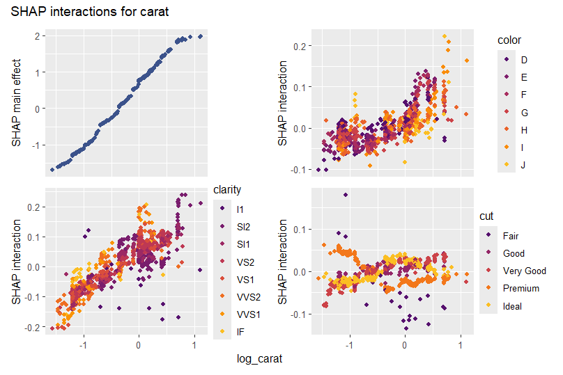
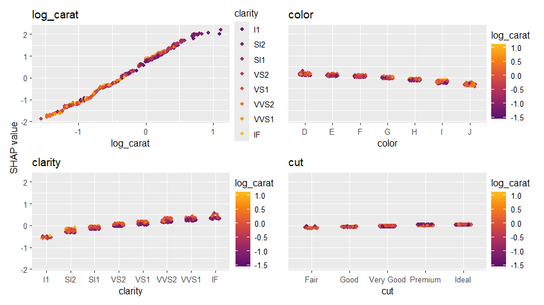
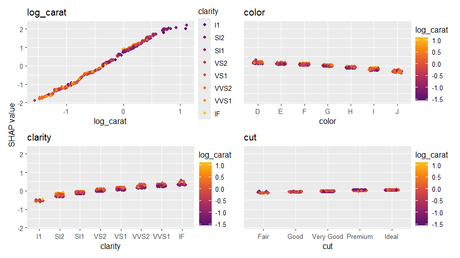
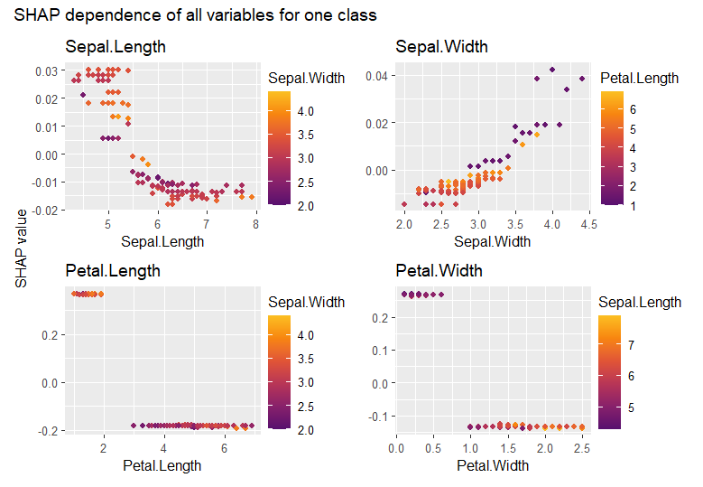

This vignette explains how to use {shapviz} with {Tidymodels}.
XGBoost and LightGBM are shipped with super-fast TreeSHAP algorithms. Thus, doing a SHAP analysis is quite different from the normal case.
Normal case
A model fitted with Tidymodels has a predict() method
that produces a data.frame with predictions. Therefore, working with
model-agnostic SHAP (permutation SHAP or Kernel SHAP) is as easy as it
can get. But is takes a little bit of time.
library(tidymodels)
library(kernelshap)
library(shapviz)
set.seed(10)
splits <- diamonds |>
transform(
log_price = log(price),
log_carat = log(carat)
) |>
initial_split()
df_train <- training(splits)
dia_recipe <- df_train |>
recipe(log_price ~ log_carat + color + clarity + cut)
rf <- rand_forest(mode = "regression") |>
set_engine("ranger")
rf_wf <- workflow() |>
add_recipe(dia_recipe) |>
add_model(rf)
fit <- rf_wf |>
fit(df_train)
# SHAP analysis
xvars <- c("log_carat", "color", "clarity", "cut")
X_explain <- df_train[1:1000, xvars] # Use only feature columns
# 1.5 minutes on laptop
# Note: If you have more than p=8 features, use kernelshap() instead of permshap()
system.time(
shap_values <- fit |>
permshap(X = X_explain) |>
shapviz()
)
# saveRDS(shap_values, file = "shap_values.rds")
# shap_values <- readRDS("shap_values.rds")
shap_values |>
sv_importance("bee")
shap_values |>
sv_dependence(xvars)

XGBoost
When your Tidymodel is an XGBoost or LightGBM model, you will almost
always want to use their native TreeSHAP implementation. In this case,
you need to pass to shapviz() the fully prepared
explanation matrix X_pred and the underlying fit
engine.
We will show how to prepare the inputs for shapviz(),
namely
- the underlying fit engine,
-
X_pred, the matrix passed to XGBoost’spredict(), - and optionally
X, the dataframe used for visualizations (to see original factor levels etc).
Since XGBoost offers SHAP interactions, we additionally show how to integrate these into the analysis. of course, you don’t have to work with SHAP interactions, especially if your model has many predictors.
Remark: Don’t use 1:m transforms such as
One-Hot-Encodings. They are usually not necessary and make the workflow
more complicated. If you can’t avoid this, check the
collapse argument in shapviz().
library(tidymodels)
library(shapviz)
library(patchwork)
set.seed(10)
splits <- diamonds |>
transform(
log_price = log(price),
log_carat = log(carat)
) |>
initial_split()
df_train <- training(splits)
dia_recipe <- df_train |>
recipe(log_price ~ log_carat + color + clarity + cut) |>
step_integer(all_ordered())
# Should be tuned in practice
xgb_model <- boost_tree(mode = "regression", learn_rate = 0.1, trees = 100) |>
set_engine("xgboost")
xgb_wf <- workflow() |>
add_recipe(dia_recipe) |>
add_model(xgb_model)
fit <- xgb_wf |>
fit(df_train)
# SHAP Analysis
df_explain <- df_train[1:1000, ]
X_pred <- bake( # Goes to xgboost:::predict.xgb.Booster()
prep(dia_recipe),
has_role("predictor"),
new_data = df_explain,
composition = "matrix"
)
stopifnot(colnames(X_pred) %in% colnames(df_explain))
shap_values <- extract_fit_engine(fit) |>
shapviz(X_pred = X_pred, X = df_explain, interactions = TRUE)
# SHAP importance
shap_values |>
sv_importance(show_numbers = TRUE) +
ggtitle("SHAP importance")
# Absolute average SHAP interactions (off-diagonals already multiplied by 2)
shap_values |>
sv_interaction(kind = "no")
# log_carat clarity color cut
# log_carat 0.87400688 0.067567245 0.032599394 0.024273852
# clarity 0.06756720 0.143393109 0.028236784 0.004910905
# color 0.03259941 0.028236796 0.095656042 0.004804729
# cut 0.02427382 0.004910904 0.004804732 0.031114735
# Usual dependence plot
xvars <- c("log_carat", "color", "clarity", "cut")
shap_values |>
sv_dependence(xvars, share_y = TRUE) +
plot_annotation("SHAP dependence plots")
# SHAP interactions for carat
shap_values |>
sv_dependence("log_carat", color_var = xvars, interactions = TRUE) +
plot_annotation("SHAP interactions for carat")


LightGBM
Regarding SHAP analysis and Tidymodels, LightGBM is slightly different from XGBoost:
- It requires {bonsai}.
- It turns factors internally to integers and treats them as LightGBM categoricals. You should avoid this for factors with logical order, so don’t forget to manually integer encode such factors in a recipe. For illustration only, we treat “cut” as unordered and let LightGBM use internal encodings.
- LightGBM does not offer SHAP interactions.
library(tidymodels)
library(bonsai)
library(shapviz)
set.seed(10)
splits <- diamonds |>
transform(
log_price = log(price),
log_carat = log(carat)
) |>
initial_split()
df_train <- training(splits)
dia_recipe <- df_train |>
recipe(log_price ~ log_carat + color + clarity + cut) |>
step_integer(color, clarity) # we keep cut a factor (for illustration only)
# Should be tuned in practice
lgb_model <- boost_tree(mode = "regression", learn_rate = 0.1, trees = 100) |>
set_engine("lightgbm")
lgb_wf <- workflow() |>
add_recipe(dia_recipe) |>
add_model(lgb_model)
fit <- lgb_wf |>
fit(df_train)
# SHAP analysis
df_explain <- df_train[1:1000, ]
X_pred <- bake( # Goes to lightgbm:::predict.lgb.Booster()
prep(dia_recipe),
has_role("predictor"),
new_data = df_explain
) |>
bonsai:::prepare_df_lgbm()
head(X_pred, 2)
# log_carat color clarity cut
# [1,] 0.3148107 5 5 3
# [2,] -0.5978370 2 3 4
stopifnot(colnames(X_pred) %in% colnames(df_explain))
shap_values <- extract_fit_engine(fit) |>
shapviz(X_pred = X_pred, X = df_explain)
shap_values |>
sv_importance(show_numbers = TRUE)
shap_values |>
sv_dependence(c("log_carat", "color", "clarity", "cut"), share_y = TRUE) 

Probabilistic classification
For probabilistic classification, the code is very similar to above regression examples.
shapviz() returns a list of “shapviz” objects (one per
class). Sometimes, you might want to analyze them together, or select an
individual class via $name_of_interesting_class or
[[.
Normal case
Simply pass type = "prob" to
kernelshap::kernelshap() or
kernelshap::permshap():
library(tidymodels)
library(kernelshap)
library(shapviz)
library(patchwork)
set.seed(1)
iris_recipe <- iris |>
recipe(Species ~ .)
fit <- rand_forest(trees = 100) |>
set_engine("ranger") |>
set_mode("classification")
iris_wf <- workflow() |>
add_recipe(iris_recipe) |>
add_model(fit)
fit <- iris_wf |>
fit(iris)
# SHAP analysis
X_explain <- iris[-5] # Feature columns of <=2000 rows from the training data
system.time( # 2s
shap_values <- permshap(fit, X_explain, type = "prob") |>
shapviz()
)
sv_importance(shap_values)
shap_values |>
sv_dependence("Sepal.Length") +
plot_layout(ncol = 1) +
plot_annotation("SHAP dependence of one variable for all classes")
# Use $ to extract SHAP values for one class
shap_setosa <- shap_values$.pred_setosa
shap_setosa |>
sv_dependence(colnames(X_explain)) +
plot_annotation("SHAP dependence of all variables for one class")

XGBoost
For XGBoost and LightGBM, we again want to use its native TreeSHAP implementation.
We can slightly adapt the code from the regression example:
library(tidymodels)
library(shapviz)
library(patchwork)
set.seed(1)
iris_recipe <- iris |>
recipe(Species ~ .)
xgb_model <- boost_tree(learn_rate = 0.1, trees = 100) |>
set_mode("classification") |>
set_engine("xgboost", verbose = -1)
xgb_wf <- workflow() |>
add_recipe(iris_recipe) |>
add_model(xgb_model)
fit <- xgb_wf |>
fit(iris)
# SHAP analysis
df_explain <- iris # Typically 1000 - 2000 rows from the training data
X_pred <- bake( # goes to xgboost:::predict.xgb.Booster()
prep(iris_recipe),
has_role("predictor"),
new_data = df_explain,
composition = "matrix"
)
stopifnot(colnames(X_pred) %in% colnames(df_explain))
shap_values <- extract_fit_engine(fit) |>
shapviz(X_pred = X_pred, X = df_explain) |>
setNames(levels(iris$Species))
shap_values |>
sv_importance()
shap_values |>
sv_dependence(v = "Sepal.Length", color_var = "Sepal.Width") +
plot_layout(ncol = 1, guides = "collect")
LightGBM (binary probabilistic)
Let’s complete this vignette by running a binary LightGBM model.
library(tidymodels)
library(bonsai)
library(shapviz)
library(patchwork)
set.seed(1)
# Make factor with two levels
iris$sl_large <- factor(
iris$Sepal.Length > median(iris$Sepal.Length), labels = c("no", "yes")
)
iris_recipe <- iris |>
recipe(sl_large ~ Sepal.Width + Petal.Length + Petal.Width + Species) # |>
# step_integer(some ordinal factors)
lgb_model <- boost_tree(learn_rate = 0.1, trees = 100) |>
set_mode("classification") |>
set_engine("lightgbm", verbose = -1)
lgb_wf <- workflow() |>
add_recipe(iris_recipe) |>
add_model(lgb_model)
fit <- lgb_wf |>
fit(iris)
# SHAP analysis
df_explain <- iris # Typically 1000 - 2000 rows from the training data
X_pred <- bake(
prep(iris_recipe),
has_role("predictor"),
new_data = df_explain
) |>
bonsai:::prepare_df_lgbm()
stopifnot(colnames(X_pred) %in% colnames(df_explain))
shap_values <- extract_fit_engine(fit) |>
shapviz(X_pred = X_pred, X = df_explain)
shap_values |>
sv_importance()
shap_values |>
sv_dependence("Species")